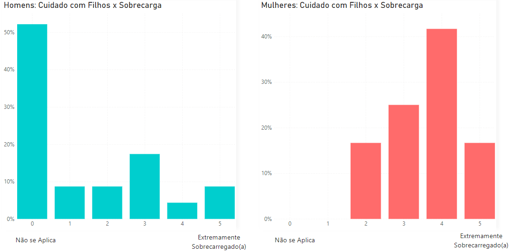
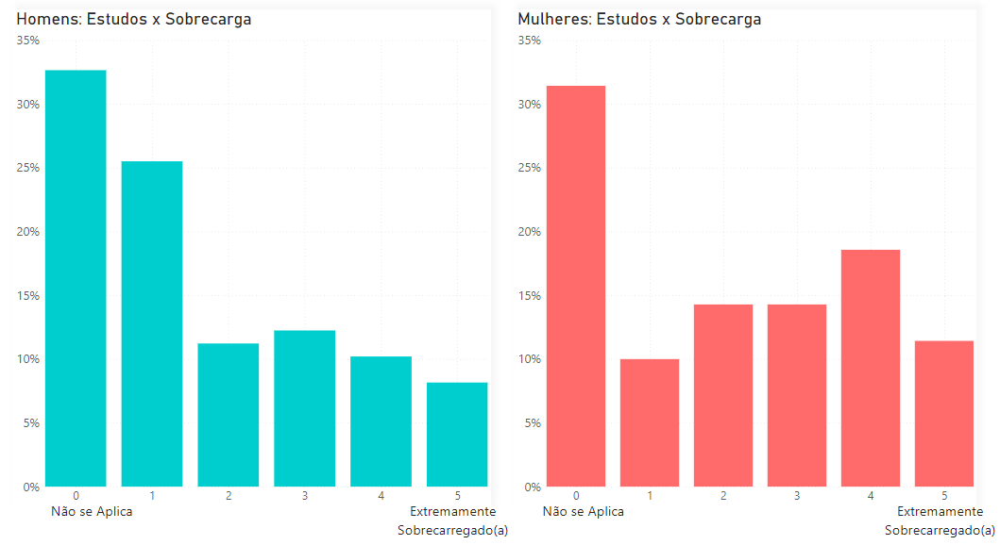
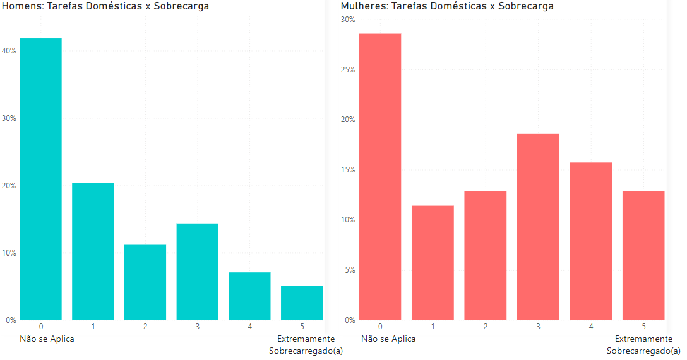
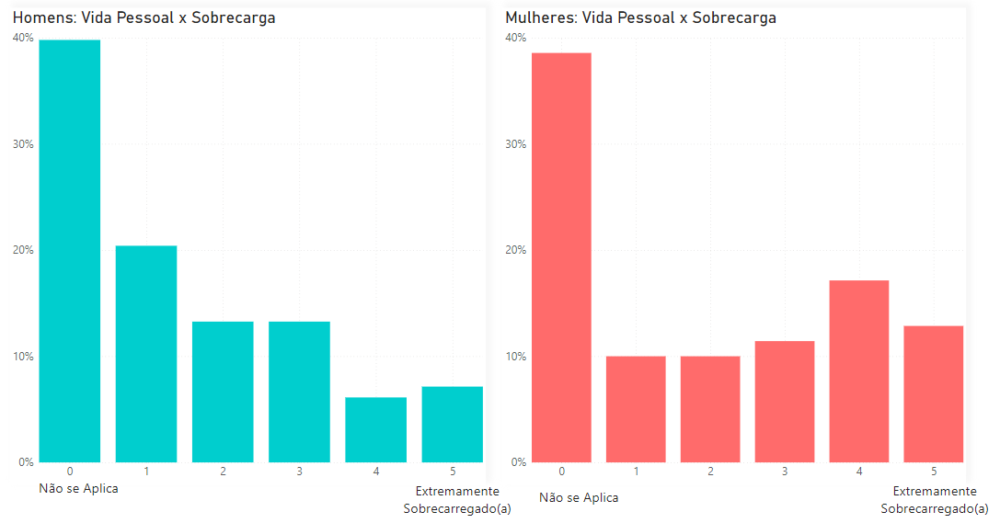

Cuidado com os Filhos
Desenvolvimento de Carreira

Estudos
Tarefas Domésticas
Vida Pessoal
Sobrecarga no Home Office: Análise Comparativa entre Homens e Mulheres
Na pesquisa realizada, a sobrecarga é definida como uma emoção que pode se manifestar de várias maneiras no ambiente de trabalho, frequentemente relacionada ao cansaço extremo, esgotamento físico e emocional causados pela carga de trabalho constante. Os participantes foram convidados a avaliar seu nível de sobrecarga profissional em uma escala de 0 a 5. Nessa escala, 0 representa a ausência de sobrecarga ("não aplicável"), enquanto 5 indica um alto grau de sobrecarga, refletindo desafios e exaustão significativa em seu ambiente de trabalho.